Para artesãos do couro
Ideal para quem já produz peças manuais e quer ganhar tempo usando moldes prontos.
Moldes Digitais em PDF · Couro Country · Produza para Sempre
Receba uma coleção de moldes digitais para fabricar peças de couro inspiradas no mundo dos cavalos, fazenda e montaria. Você imprime o molde, recorta, passa para o couro, marca os furos e monta a peça com acabamento artesanal — sem precisar desenhar nada do zero.
Produto digital em PDF. Receba no WhatsApp e e-mail. Produto físico não incluso.

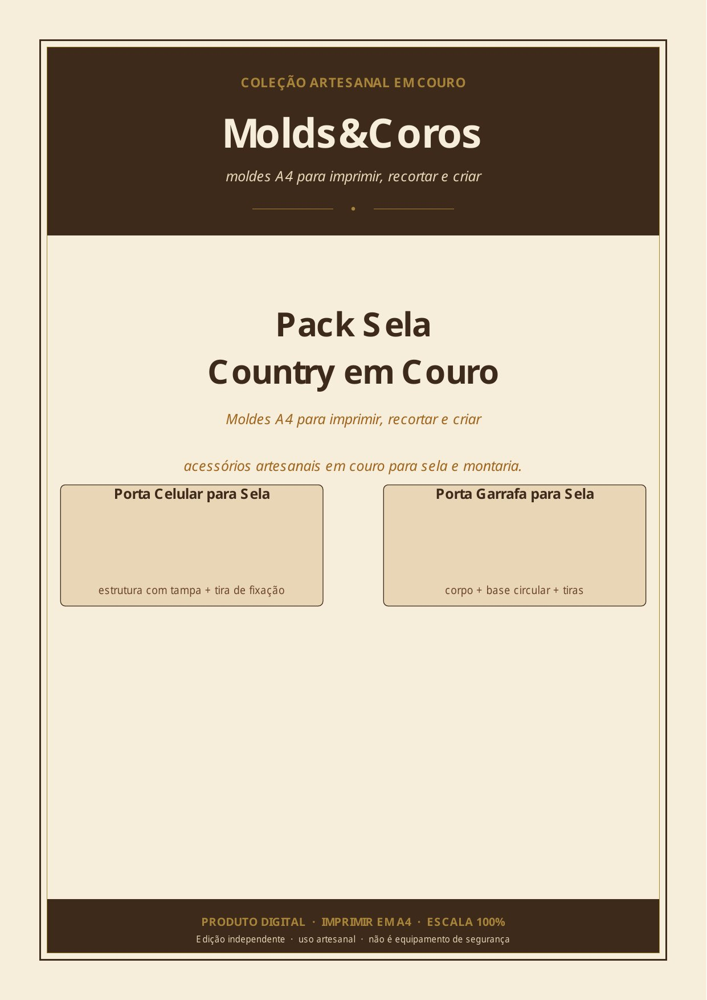
Se você é artesão, seleiro, cuteleiro, faz bainhas, porta canivetes, acessórios country ou quer começar a produzir peças de couro para vender, esse pack foi pensado para facilitar o seu processo.
Você não precisa perder tempo desenhando moldes do zero. Com os arquivos da Molds&Coros, você imprime o molde em A4, recorta, marca no couro e monta sua peça com mais praticidade.
Ideal para quem já produz peças manuais e quer ganhar tempo usando moldes prontos.
Moldes inspirados em acessórios usados no universo de cavalo, sela, fazenda e rodeio.
O porta canivete country é uma peça útil, bonita e com forte apelo para quem gosta de lâminas, pesca, campo e vida rural.
Produza peças físicas para oferecer no WhatsApp, Instagram, feiras, agropecuárias, haras e encomendas.
Quem trabalha com couro sabe: um molde mal feito pode causar corte torto, furo desalinhado, desperdício de material e acabamento ruim.
Os moldes A4 da Molds&Coros foram criados para ajudar você a começar com mais direção, mais padrão e menos improviso.
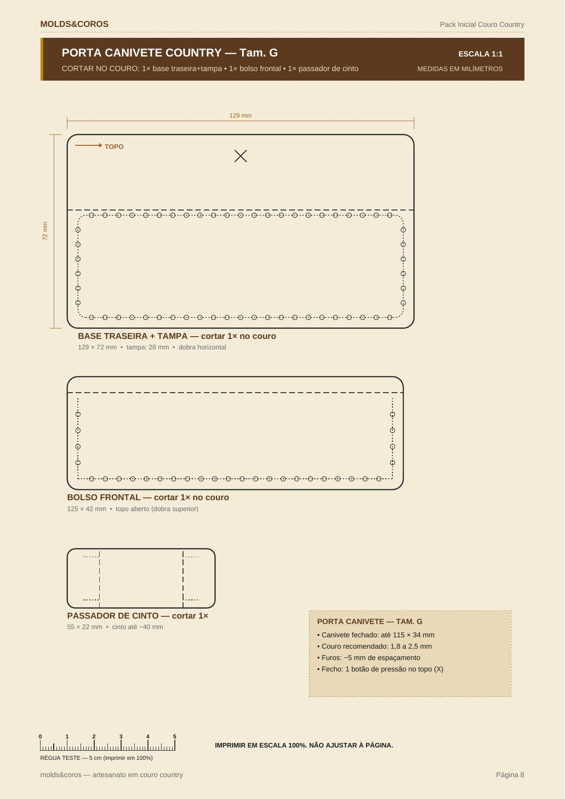
Após a compra, você recebe o acesso aos arquivos PDF direto no seu WhatsApp e no seu e-mail. Imediato.
Os moldes são preparados para impressão em folha A4 comum. Imprima quantas vezes quiser — para sempre.
Use o molde de papel para marcar o contorno, os furos e os pontos principais da peça.
Com as marcações prontas, monte sua peça artesanal em couro com acabamento country.
Moldes técnicos em escala 1:1 com todas as marcações — corte, dobra, furação e montagem.
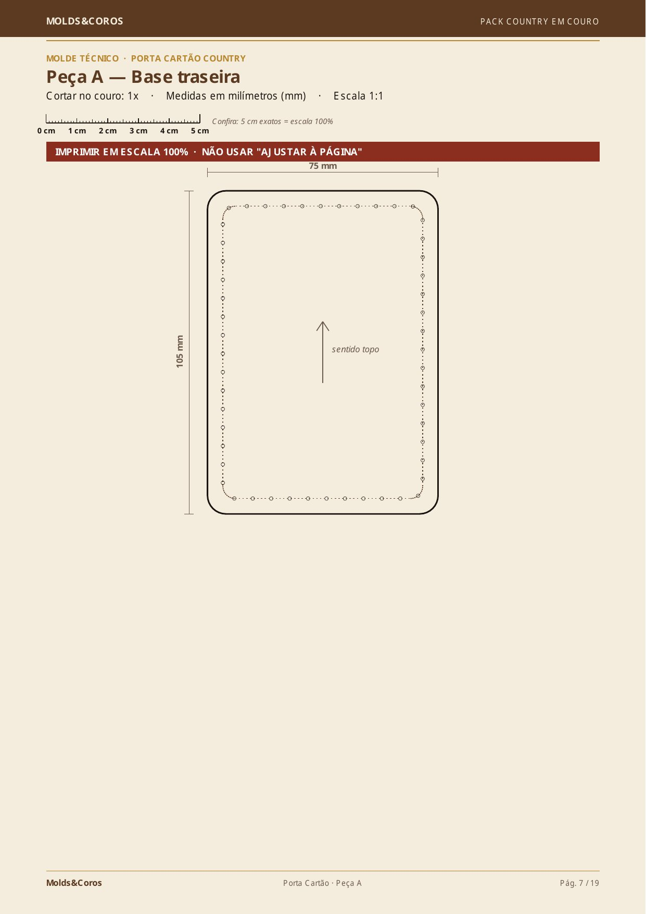


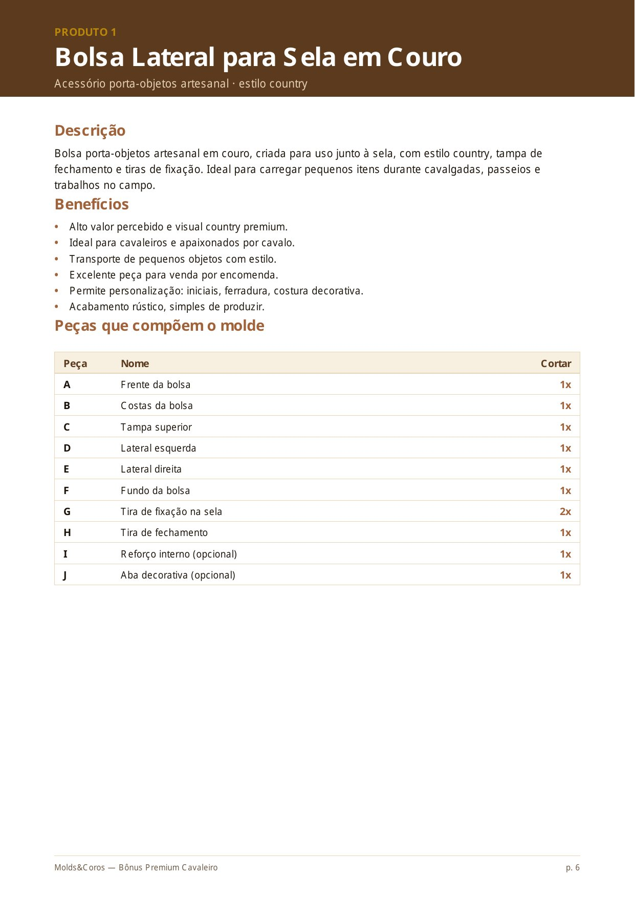


Moldes técnicos em escala 1:1 · Impressão em folha A4 · Produza peças de couro artesanais

Acessórios para cavalo, sela e cavaleiro prontos para imprimir, recortar e montar.
Receba uma coleção de moldes digitais para fabricar peças de couro inspiradas no mundo dos cavalos, fazenda e montaria. Ideal para quem trabalha com couro, quer começar no artesanato ou deseja criar produtos country para vender.
Cada molde cabe em folha A4, usa pouco couro e pode ser produzido com ferramentas simples de artesanato — acabamento artesanal com estilo country de verdade.
Molde técnico em escala 1:1 com marcações de corte, dobra, furação e montagem — tamanhos M e G.
Passo a passo para imprimir em escala 100% e conferir o tamanho correto antes de cortar.
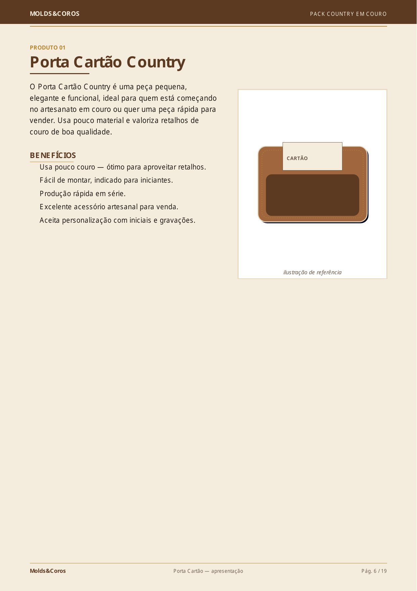
Molde compacto para criar um porta cartão em couro — peça pequena, prática e ideal para vender.
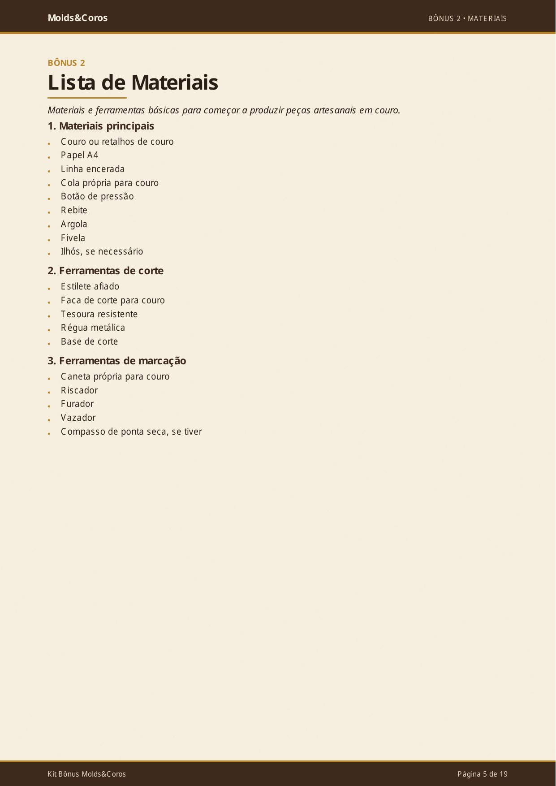
Couro, linha encerada, agulha, furador, cola, rebite, botão, argola, fivela e mais.
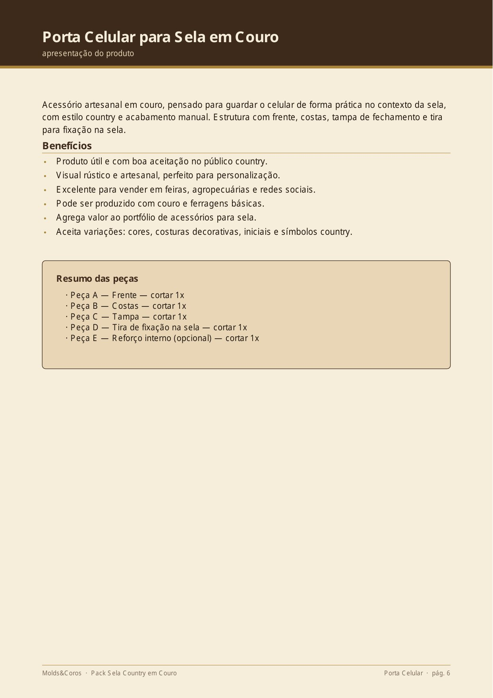
Acessório para sela em couro com tampa, tira de fixação e acabamento country artesanal.
Além dos moldes, você recebe materiais práticos para não ter dúvida em nenhuma etapa — da impressão até a venda.
Aprenda a imprimir em escala 100%, sem deformar o molde. Simples, direto e indispensável para o molde ficar no tamanho certo.
Tudo que você precisa reunido numa lista: couro, linha encerada, agulha, furador, cola, botão de pressão, argola, fivela e rebite.
Dicas práticas para deixar a borda da peça mais bonita e com visual profissional — o detalhe que separa o artesanato amador do produto que vende.
Saiba exatamente por quanto vender suas peças. A tabela considera custo de material, tempo de produção e margem de lucro.
Textos prontos para vender no WhatsApp, Instagram, feira, agropecuária e haras — é só copiar, adaptar e publicar.
Os moldes da Molds&Coros foram pensados para quem quer produzir peças físicas em couro. Você pode criar os acessórios para uso próprio, para presentear ou para vender como produto artesanal. Peças pequenas em couro têm grande potencial porque unem utilidade, estilo e personalização.
Acessórios menores usam menos couro e podem ajudar a aproveitar retalhos.
O estilo rústico combina com cavalo, fazenda, rodeio, pesca, agropecuária e vida no campo.
Você pode vender as peças prontas no WhatsApp, Instagram, grupos country, feiras, haras e lojas locais.
Iniciais, nomes, costura diferenciada, ferradura, cavalo e detalhes artesanais deixam a peça mais exclusiva.
Acessórios para cavalo, sela e cavaleiro prontos para imprimir, recortar e montar.
Receba uma coleção de moldes digitais para fabricar peças de couro inspiradas no mundo dos cavalos, fazenda e montaria — ideal para quem trabalha com couro, quer começar no artesanato ou deseja criar produtos country para vender.
Como você recebe
Acesso imediato após a confirmação do pagamento
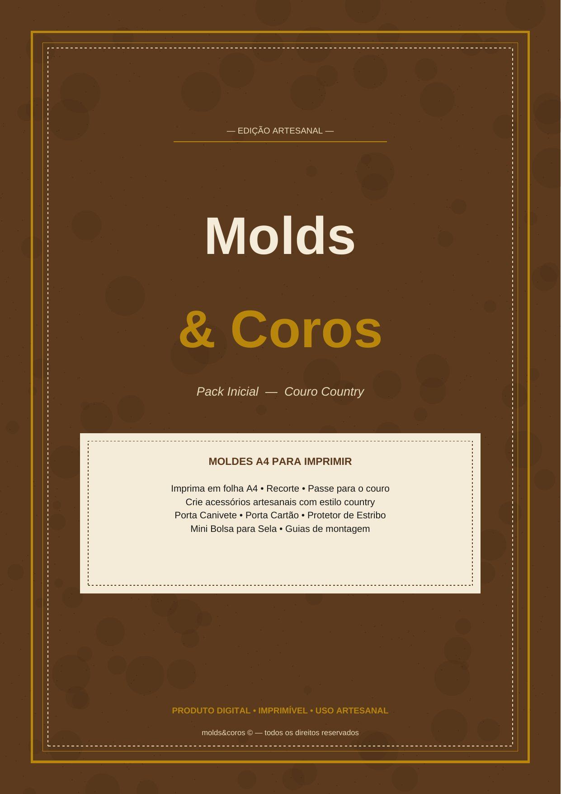
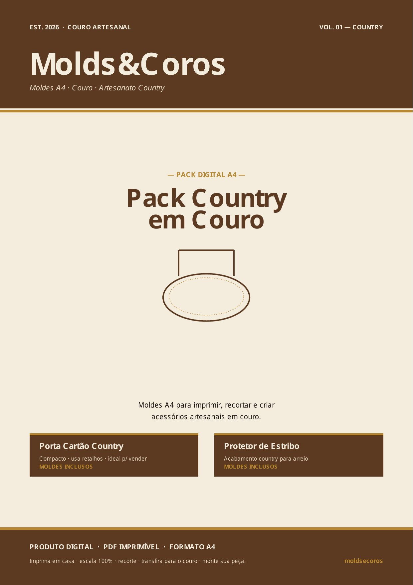
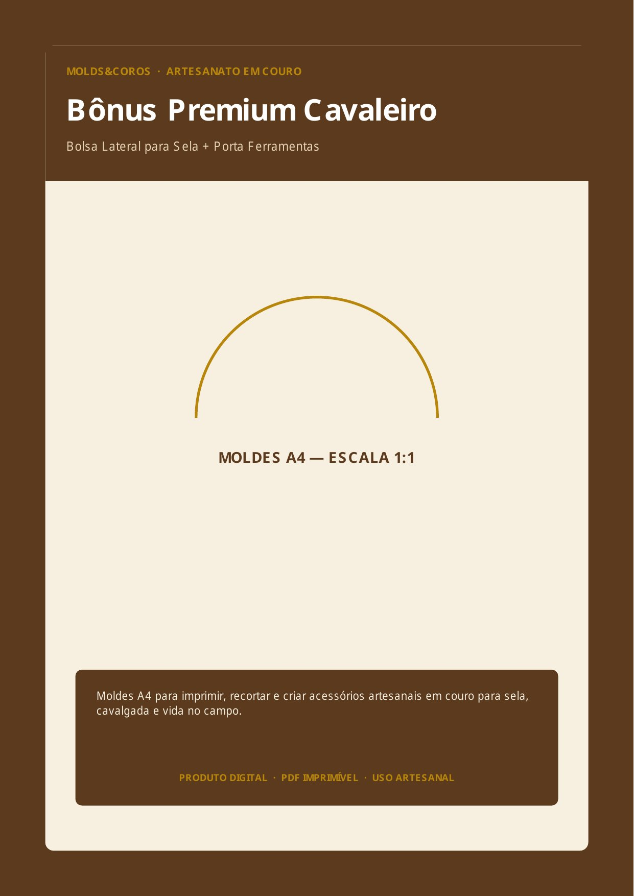
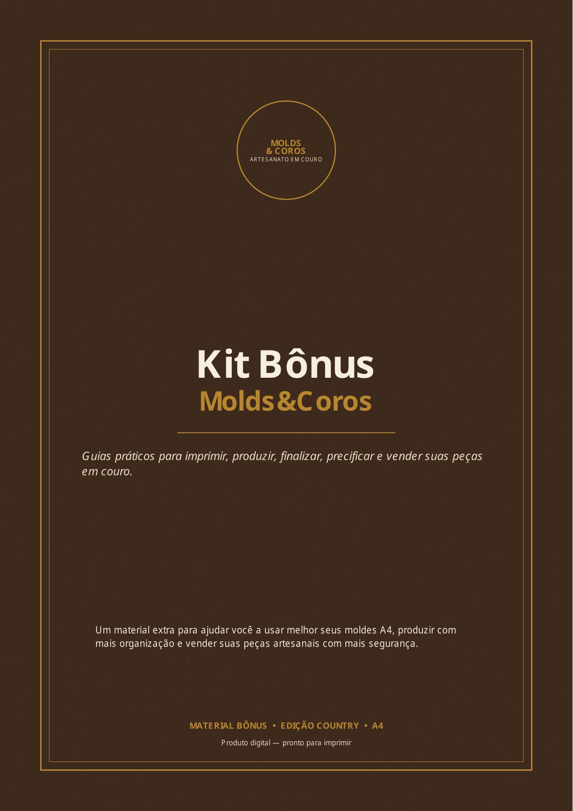
Era R$67
Hoje por apenas R$27
ou 4x de R$7,12 sem juros
Entrega digital em PDF no WhatsApp e e-mail. Produto físico não incluso.
Se o produto não for o que você esperava, você poderá solicitar reembolso conforme as regras informadas na página de pagamento.
Não. Você recebe arquivos digitais em PDF para imprimir.
Sim. Os moldes são pensados para impressão em folha A4. Quando necessário, algumas peças podem ser divididas em partes.
Não. A proposta é justamente usar moldes prontos para facilitar sua produção.
Sim. Você pode produzir as peças físicas em couro e vender os acessórios prontos.
Não. Os arquivos digitais são de uso pessoal/produtivo. A revenda, cópia ou distribuição dos PDFs não é permitida.
Sim. O pack foi pensado para facilitar o início com peças menores e práticas.
Você pode usar couro, impressora, papel A4, estilete, régua, furador, linha encerada, agulha, cola para couro, botão, rebite e ferramentas básicas de acabamento.
Produto digital em PDF. Imprima em folha A4 e comece a produzir.
Imprima, recorte, passe para o couro e monte sua peça artesanal. Ideal para quem trabalha com couro, quer começar no artesanato ou deseja criar produtos country para vender no WhatsApp, Instagram, feiras e haras.
RECEBER MEUS MOLDES AGORAProduto digital em PDF. Imprima em folha A4 e comece a produzir.